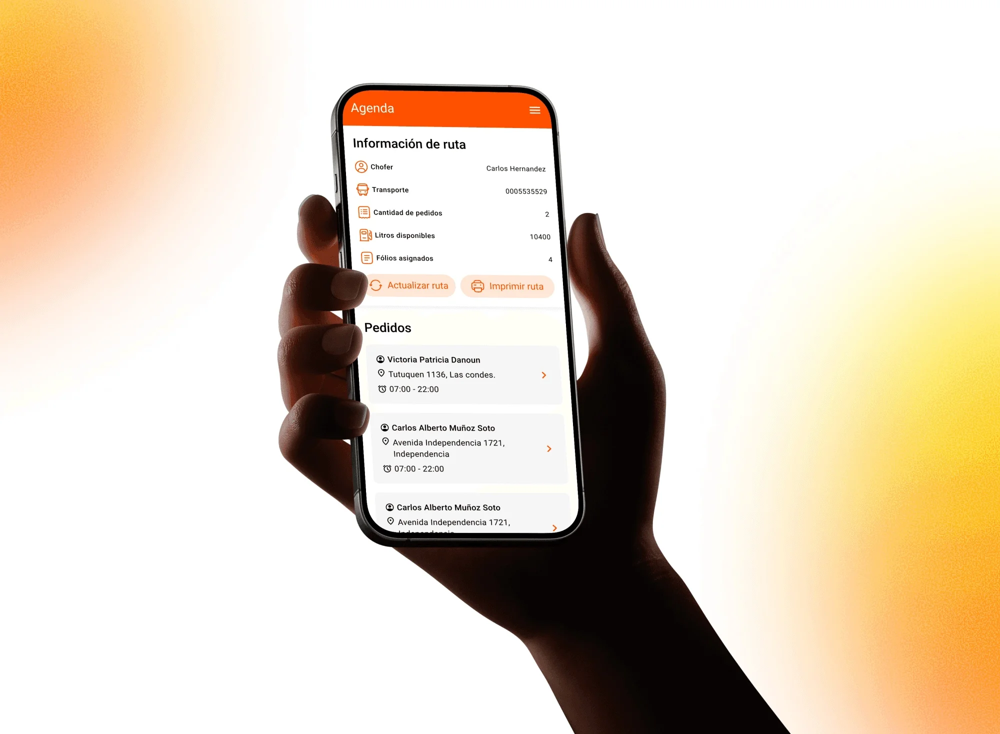
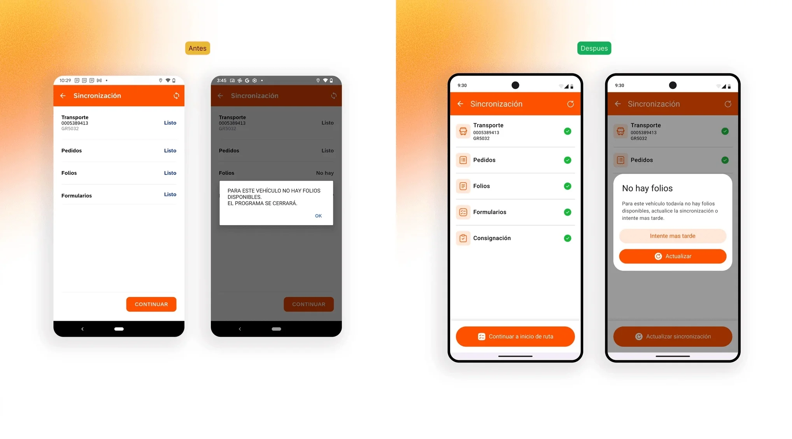
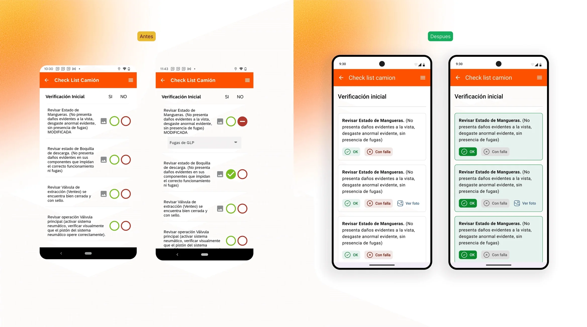
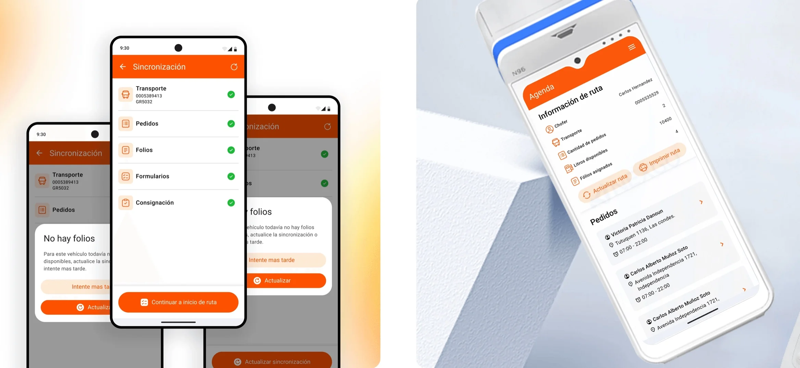

Abastible VGTR
Abastible es una de las mayores distribuidoras de gas licuado de Chile. VGTR es la aplicación que usan sus choferes para despachar gas a granel en ruta: pedidos, checklists de seguridad y emisión de documentos, todo desde el camión. El encargo fue llevar esa operación de dos dispositivos, tablet más POS, a uno solo, sin tocar ninguno de los pasos que exige la normativa.

El problema
La aplicación estaba pensada para una tablet. Al pasar al POS no cambiaba el trabajo del chofer: cambiaba todo lo demás. Pantalla más chica, una mano ocupada, sol de frente y un camión que no siempre está detenido. Una interfaz que funcionaba sentado deja de funcionar en esas condiciones.
Los fallos seguían un patrón reconocible. Antes de salir a ruta la aplicación obligaba a esperar sin decir qué faltaba ni qué hacer al respecto, y cuando algo no estaba disponible se cerraba sola. Las revisiones de seguridad, idénticas cada día, terminaban haciéndose de memoria: los controles eran más pequeños que un dedo y marcar un problema no producía ninguna respuesta visible. Y la acción que el chofer repite decenas de veces al día pesaba en pantalla lo mismo que las que casi nunca usa.
La restricción marcaba el terreno de juego: es una operación regulada y los pasos no se pueden quitar. Si el flujo no se puede acortar, la mejora tiene que venir de otro lado: de los estados, de la jerarquía y de evitar el error antes de que ocurra.
Qué hice
- Auditoría UX
- Diseño de producto
- Diseño de interacción
- Accesibilidad táctil
- Patrones y componentes
- Handoff a desarrollo
Herramientas
- Figma
- Maze
- Photoshop
- Jitter
- Claude
- ChatGPT

Qué hice
Empecé por una auditoría completa: 6 flujos y cerca de 70 vistas, ordenadas por dos criterios que no siempre coinciden, frecuencia de uso y riesgo operativo. Una pantalla que se abre veinte veces al día pesa distinto que una que se abre una vez, pero un paso mal resuelto en un checklist de seguridad pesa más que ambas.
La agenda se rediseñó como centro de ejecución. La acción más frecuente, ir al siguiente pedido, quedó fija y siempre disponible, y el listado se ordenó para leerse de un vistazo. Lo que no toqué fue la posibilidad de abrir cualquier pedido a mano: en terreno la ruta cambia, y un diseño que solo contempla el camino ideal se rompe el primer día.
En los checklists no se podía quitar ni un paso, así que trabajé sobre el patrón: controles con área táctil suficiente para usarse con guantes y de forma repetida, la misma estructura en todos los checklists, y una respuesta explícita al marcar una falla, qué implica y cuál es el paso siguiente. Todo salió documentado con estados, casos borde y criterios de aceptación por pantalla.

El resultado
La operación entera cabe hoy en un solo dispositivo. El rediseño quedó entregado listo para implementar: 6 flujos, cerca de 70 vistas, cada una con sus estados, sus casos borde y sus criterios de aceptación, más un set de patrones reutilizables que evita que la próxima pantalla vuelva a inventar los suyos.
En un producto operativo el diseño no se mide en pantallas bonitas, se mide en errores que no ocurren. Un estado ambiguo antes de salir a ruta es un camión detenido; un control demasiado pequeño en un checklist de seguridad es un toque equivocado en un registro regulado. Las tres decisiones de fondo, estados accionables, jerarquía por frecuencia real de uso y consecuencias explícitas, atacan exactamente eso.
Este proyecto me obligó a diseñar con restricciones que no se negocian: normativa, un form factor impuesto y un contexto de uso que no perdona. No se podía simplificar el proceso, así que había que hacerlo confiable. Es el tipo de encargo donde el diseño se nota poco y se echa mucho de menos cuando no está.
